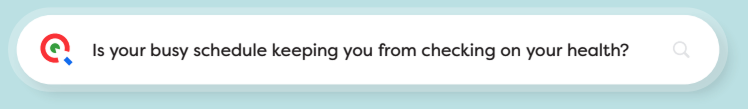

STOP SEARCHING AND GET YOUR VIRTUALCHECKUP TODAY.
Scan to confirm your address or visit VirtualCheckup.com/NMPSIA

If your busy schedule has made it hard to prioritize your health, you’re not alone. NMPSIA is now offering you a no-cost benefit that lets you complete a health checkup on your time, from the comfort of your home. The best part is that it’s available at no cost to all health plan covered employees, spouses and dependents (18+) covered on Blue Cross and Blue Shield of New Mexico.
A VirtualCheckup Home Kit is a convenient, no-cost health checkup, offering personalized insights into your well-being in under 30 minutes. In just three simple steps, you’ll uncover valuable insights into your health, plus walk away with a personalized plan to help you improve or maintain your health!